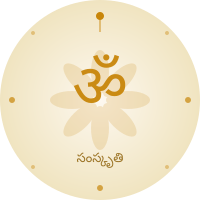

⚙ Settings
Theme
☀ Light
☽ Dark
Font Size —
16
px
Accent Colour
Language
EN · English
తె · Telugu
सं · Sanskrit

Samskruti
సంస్కృతి • संस्कृति
About
Profile
Credits
Events
Pārāyaṇa
Sponsor
Testimonials
Contact
YouTube
EN
⚙
☰
About
Profile
Credits
Events
Pārāyaṇa
Sponsor
Testimonials
Contact
YouTube
ॐ
↓
📍
▶
@samskruti.info.1